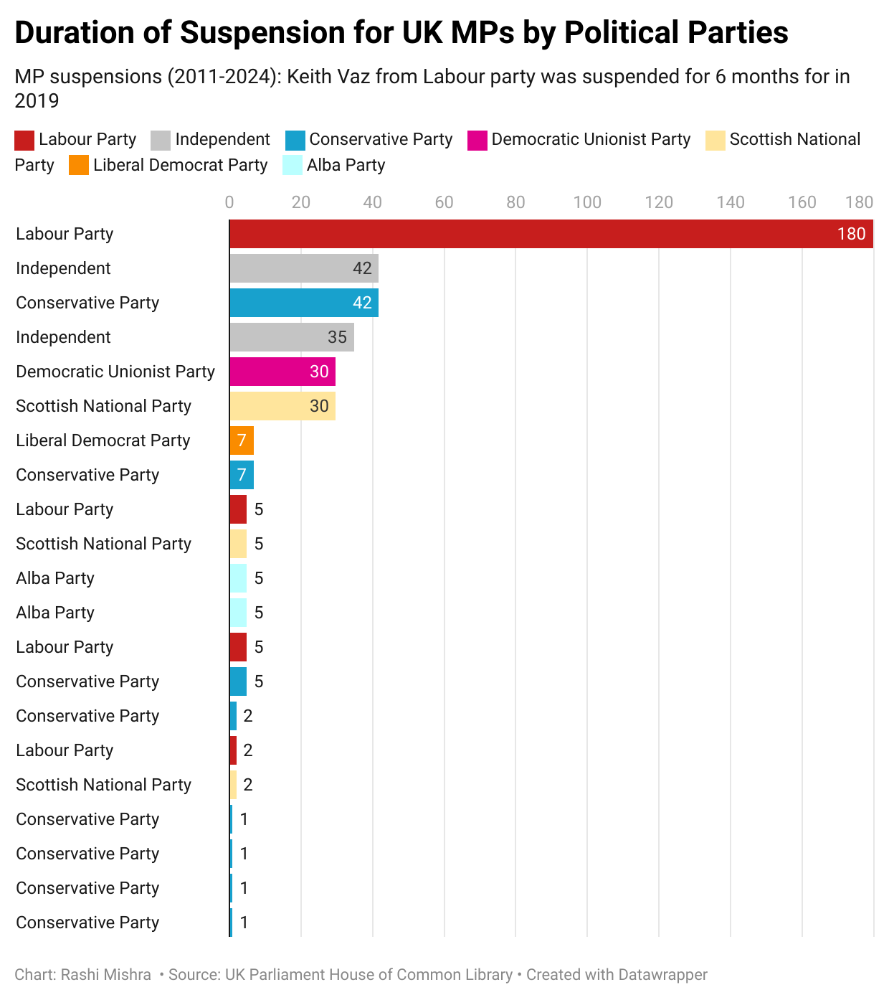

The UK Parliament's Record of MP Suspensions: A Period of Increasing Scrutiny
Labour MP's 6-month cocaine scandal tops decade of misconduct as Tories lead in suspension numbers
Labour MP's 6-month cocaine scandal tops decade of misconduct as Tories lead in suspension numbers
The UK Parliament saw 21 MPs suspended over a 13-year period, with varying degrees of punishment based on the nature of their misconduct. Though Conservative Party had more MPs suspended (8 in total), their suspension duration was notably shorter, maxing out at 6 weeks with some as brief as a day. In contrast, the Labour Party saw fewer suspensions but faced harsher penalties, with Labour MP Keith Vaz receiving the most severe punishment of a 6-month suspension in 2019.
Vaz's case stands out not just for its unprecedented duration (180 days) - the longest since records began in 1949 - but also for the severity of his offense. According to UK House of Commons Library records, Vaz breached the 2015 House of Commons Code of Conduct by showing willingness to purchase cocaine for others and failing to cooperate with investigators, actions that significantly damaged Parliament's reputation and integrity.
While most MPs faced suspension for relatively minor infractions like disorderly conduct or code violations, recent years saw more serious cases. Independent MP Rob Roberts got a 6-week suspension in 2021 for sexual misconduct policy breach. Tory MP Peter Bone received the same punishment in 2023 for bullying a junior staffer over 4 months plus a sexual misconduct incident. SNP's Margaret Ferrier faced a 30-sitting-day suspension in 2023 for COVID testing transparency failures. The most recent case involved Tory MP Scott Benton in 2024, under Rishi Sunak's leadership, getting a 35-sitting-day suspension for offering to lobby ministers on behalf of gambling interests.
This data spans from 2011 to 2024, coinciding with the Tories' rise to power under David Cameron in 2010. The following decade proved politically turbulent, marked by Brexit and frequent leadership changes as the party struggled to maintain control. During this period, Parliament implemented several key reforms. The 2018 Independent Complaints and Grievance Scheme introduced new policies on behavior, bullying, harassment, and sexual misconduct; 2020 saw the creation of the Independent Expert Panel for handling appeals and sanctions. Earlier, in 2010, the Independent Parliamentary Standards Authority (IPSA) was established following MP expenses scandals.
Suspension patterns show interesting trends: 2011-2019 saw minimal activity, with several years recording zero suspensions. However, numbers jumped sharply from 2020, peaking at 5 suspensions in 2022, followed by 4 in 2023, before dropping to 1 in 2024. The 2020-2023 period stands out for its heightened suspension activity compared to the previous decade. Reasons varied widely, from code of conduct breaches and disorderly behavior to sexual misconduct violations, showing no clear pattern in the types of offenses leading to suspension.